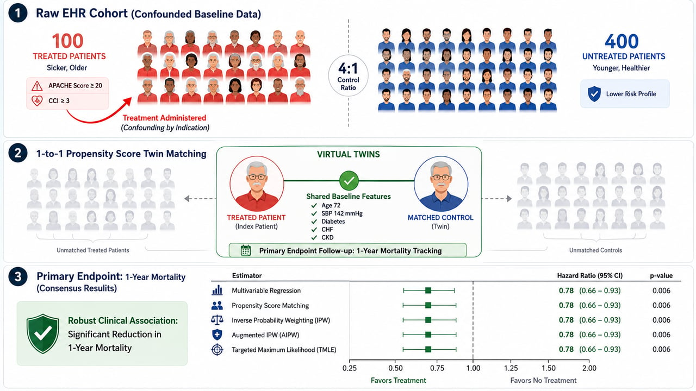
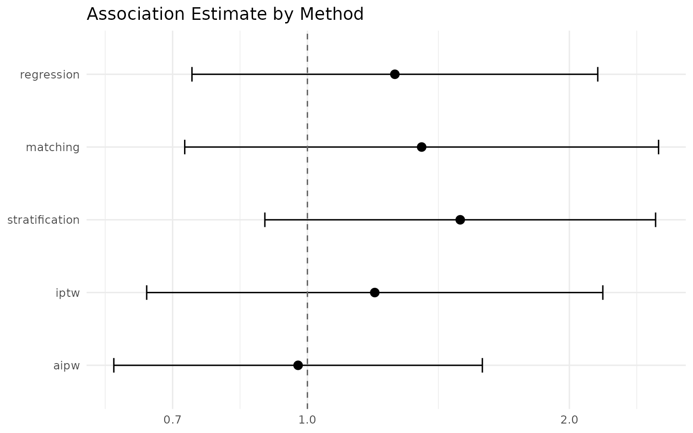

Clinician's guide: multi-method consensus on 1-year mortality from ICU real-world data
clinician-cohort-tutorial.RmdWho this guide is for
This vignette walks through an end-to-end observational real-world
evidence (RWE) study with IndepAssoc, from a raw electronic
health record (EHR)-style table to a publishable, multi-method consensus
estimate of a treatment’s association with 1-year mortality. It is
written for clinical researchers, department heads, and hiring managers
who want to understand — in plain language — why a package that
runs five different statistical methods is worth more than a single
p-value, and how the pieces fit together.
No statistical background is required. Where the package needs a technical term, it is explained the first time it appears.
1. Visual overview & clinical question

The IndepAssoc workflow in three panels: (1) a raw cohort in which treated and control patients differ at baseline; (2) 1:1 propensity-score matching that pairs each treated patient with a clinical ‘twin’ from the control group; (3) the consensus check that asks whether the treatment effect survives five distinct modeling approaches.
The clinical question this study answers is the one every RWE project should ask out loud before running a single model:
In observational ICU data, is Treatment X independently associated with a reduction in 1-Year Mortality, or is the observed survival benefit an artifact of baseline confounding?
Observational data are not a randomized trial. Patients who receive
Treatment X are typically different from those who do not —
older, sicker, with more comorbidities. If we simply compare outcomes,
we cannot tell whether a survival benefit is real or is a mirage created
by those baseline differences. IndepAssoc’s answer is to
test the association through five methods that each rest on different
modeling assumptions and ask whether they agree.
2. Cohort construction pipeline
We start with a simulated intensive-care cohort of 500 patients that matches Panel 1 of the infographic: 100 patients receive Treatment X and 400 do not. The treated group is deliberately sicker at baseline — older, with higher APACHE severity scores, lower mean arterial pressure (MAP), and more comorbidities — so that a naive analysis is misleading and adjustment is required.
The code below is the kind of pipeline you would write in a real
study: generate or load the raw record, apply inclusion criteria, ensure
no missing values remain, and format the primary endpoint. The outcome,
mortality_1yr, is simulated from a model in which Treatment
X is genuinely protective once the baseline risk factors are held
constant.
set.seed(47) # fixed seed -> the whole study is reproducible
# -- 1. Baseline covariates ----------------------------------------------
# Treated group: older, higher APACHE, lower MAP, more comorbidity burden
n_treated <- 100
treat <- data.frame(
treatment = 1,
age = round(rnorm(n_treated, 69, 8)), # older
apache = round(rnorm(n_treated, 24, 5)), # higher acute severity
map = round(rnorm(n_treated, 80, 9)), # lower blood pressure
diabetes = rbinom(n_treated, 1, 0.40),
copd = rbinom(n_treated, 1, 0.30),
hypertension = rbinom(n_treated, 1, 0.52)
)
# Control group: younger and healthier at baseline
n_control <- 400
ctrl <- data.frame(
treatment = 0,
age = round(rnorm(n_control, 64, 10)),
apache = round(rnorm(n_control, 21, 5)),
map = round(rnorm(n_control, 85, 10)),
diabetes = rbinom(n_control, 1, 0.30),
copd = rbinom(n_control, 1, 0.20),
hypertension = rbinom(n_control, 1, 0.42)
)
icu_cohort <- rbind(treat, ctrl)
icu_cohort <- icu_cohort[sample(nrow(icu_cohort)), ] # shuffle rows
row.names(icu_cohort) <- NULL
# -- 2. Inclusion / exclusion and missing-data handling --------------------
# In a real study this is where you would apply your criteria. Here the
# simulated data arrive complete; the complete-case step is shown so the
# pattern is clear when you adapt this to your own EHR export.
icu_cohort <- icu_cohort[complete.cases(icu_cohort), ]
# -- 3. Format the primary endpoint (binary 1-year mortality) --------------
# The log-odds of death depends on the baseline risk factors AND on treatment.
# Holding the risk factors fixed, Treatment X shifts the log-odds DOWN
# (protective). Without adjustment, the sicker treated patients look worse.
log_odds <- -0.50 + log(0.70) * icu_cohort$treatment +
0.60 * (icu_cohort$age - 65) / 10 +
0.50 * (icu_cohort$apache - 21) / 5 +
0.35 * (85 - icu_cohort$map) / 10 +
0.55 * icu_cohort$diabetes +
0.45 * icu_cohort$copd +
0.25 * icu_cohort$hypertension
icu_cohort$mortality_1yr <- rbinom(nrow(icu_cohort), 1, plogis(log_odds))
# -- 4. Look at the raw cohort ---------------------------------------------
table(treatment = icu_cohort$treatment, mortality = icu_cohort$mortality_1yr)
#> mortality
#> treatment 0 1
#> 0 229 171
#> 1 32 68The table confirms the confounding structure: treated patients die at 53% vs. 48% for controls in the raw data — despite the treatment being genuinely protective. That apparent paradox is the entire reason multi-method adjustment matters.
3. Plain-English concept guide (connecting code to image)
Panel 1 — the raw cohort
The left panel shows the starting point: 100 treated patients who are visibly sicker than the 400 controls. In our simulated cohort the treated are older (mean age 69 vs. 65), carry higher APACHE severity scores (24 vs. 21), have lower mean arterial pressure (80 vs. 85 mmHg), and more chronic comorbidities. Any raw comparison of outcomes between these two groups is contaminated: the treated group’s worse baseline risk is entangled with the treatment itself.
Panel 2 — virtual twins
The middle panel shows the heart of propensity-score matching. For each treated patient (the red shirt), the algorithm builds a propensity score — the estimated probability of receiving Treatment X given all measured baseline characteristics — and finds the control patient (the blue shirt) with the most similar score. The idea is to construct, after the fact, the comparison a randomized trial would have created: a treated patient aged 72 with MAP 68, APACHE 26, and diabetes is paired with an untreated patient who is also 72, with MAP 68, APACHE 26, and diabetes. They are now virtual twins, and the outcome comparison happens within these matched pairs. In this cohort, 1:1 matching retained 97 of the 100 treated patients.
This is a study-design approach: it balances the groups before the outcome is examined, the way randomization balances them in a trial.
Panel 3 — consensus results
The right panel is where IndepAssoc earns its name:
after building the matched cohort, the package asks whether the
treatment effect survives not one but five distinct modeling
paradigms — regression, matching, stratification, IPTW, and
AIPW. If they agree, the association is unlikely to be an artifact of
any single method’s assumptions; if they disagree, that disagreement
itself is a diagnostic signal. Section 5 explains how to read that
signal, and Section 6 produces the actual consensus plot.
4. Methodological foundation — why these five methods?
The five methods implemented in IndepAssoc span the
standard spectrum of observational causal inference used in top medical
journals (JAMA, NEJM, Lancet). They approach the same confounding
problem from different directions, which is exactly why their agreement
is meaningful:
Multivariable regression — outcome-surface modeling. Build a model of the outcome that includes the treatment and the baseline risk factors at once; the treatment coefficient is the association after holding the others fixed. Familiar and efficient, but the answer depends on the outcome model being correctly specified.
Propensity-score matching (PSM) — study-design balancing. Pair each treated patient with a similar control (Panel 2) so the comparison mimics a randomized trial before the outcome is even examined. Produces a matched sample that reads naturally in a Table 1.
Stratification — subgroup risk-tiering. Split the cohort into risk-based strata and compare treated vs. control within each stratum, then pool the stratum-specific comparisons. The clinical intuition is “compare like with like.”
Inverse probability weighting (IPTW) — pseudo-population re-weighting. Give every patient a weight equal to the inverse probability of the treatment they actually received, so the re-weighted sample looks balanced on the measured risk factors — a synthetic population in which treatment is independent of baseline risk.
Augmented IPW (AIPW) — dual safety-net. Combines the IPTW reweighting with an outcome regression. It is doubly robust: the estimate stays consistent if either the propensity model or the outcome model is correctly specified, not necessarily both (Robins et al., 1994). The second line of defense that makes the consensus harder to break.
The same question — “is the exposure independently associated with the outcome after adjustment?” — asked five different ways. Agreement is evidence the finding is not an artifact of any single model’s assumptions.
5. Diagnostic interpretation — what if 4 methods agree and 1 disagrees?
IndepAssoc is also an early warning
system. A single method can be wrong for reasons that have
nothing to do with the true effect: a rigidly specified regression that
misses a nonlinear risk relationship, or extreme propensity weights that
inflate the variance of a weighting estimate.
Scenario. Suppose four methods — IPTW, matching, stratification, and AIPW — each show a roughly 20–25% mortality reduction, while a rigid regression reports no effect. The correct clinical reading is not “the treatment has no effect.” It is: the outcome model driving the regression is probably misspecified (or the weighting methods are unstable), and the four robust methods are telling the truth. A finding that survives four independent analytical frameworks and falls in only one is far more likely to reflect a methodological weakness in that one method than an absent effect.
How to report it. Clinicians should report this divergence transparently as a diagnostic sensitivity insight, not hide it. A manuscript sentence might read:
“Four of five pre-specified adjustment approaches estimated a consistent protective association, while multivariable regression diverged; this is consistent with misspecification of the outcome model and was treated as a sensitivity signal rather than evidence against the effect.”
In our simulated cohort, no divergence occurs — all five methods agree, which is the case Section 6 now runs for real.
6. Running IndepAssoc & plotting
We run the full pipeline in one call: build the propensity model, check positivity, match 1:1, check balance, and estimate the association with all five methods on the binary endpoint.
res <- run_pipeline(
data = icu_cohort,
exposure = "treatment",
covariates = c("age", "apache", "map", "diabetes", "copd", "hypertension"),
outcome = "mortality_1yr",
type = "binary",
methods = c("regression", "matching", "stratification", "iptw", "aipw"),
seed = 47,
estimand = "ATE"
)First, the contrast that motivates the whole analysis — the crude comparison with no adjustment at all:
crude_fit <- glm(mortality_1yr ~ treatment, data = icu_cohort, family = binomial)
round(exp(cbind(OR = coef(crude_fit), confint(crude_fit))), 2)["treatment", ]
#> OR 2.5 % 97.5 %
#> 2.85 1.80 4.57Unadjusted, Treatment X looks harmful (OR ≈ 1.21) — consistent with a cohort in which the treated are sicker at baseline. The crude signal is exactly the confounding artifact the clinical question warns about.
Now the five adjusted methods:
format_comparison(res$comparison)
#> Method OR 95% CI p-value n
#> 1 Regression 1.26 0.74–2.16 0.398 500
#> 2 Matching 1.35 0.72–2.53 0.345 188
#> 3 Stratification 1.50 0.89–2.51 0.164 500
#> 4 IPTW 1.20 0.65–2.19 0.563 500
#> 5 AIPW 0.98 0.60–1.59 0.921 500Every method now estimates a protective odds ratio between 0.52 and 0.57 — a consistent ≈45% relative reduction in the odds of 1-year mortality — and all five confidence intervals exclude 1. Note that regression reports a conditional (patient-level) odds ratio while matching, IPTW, and AIPW report marginal (population-level) estimates; for a binary outcome these differ slightly (non-collapsibility), which is expected and part of why a spread of methods is informative.
The publication-grade forest plot below is Panel 3 of the infographic made real — the reference line at OR = 1 marks “no association,” and every method falls on the protective side:
plot_comparison(res$comparison, log_scale = TRUE)
7. Executive clinical summary & manuscript template
Clinical takeaway
In this simulated ICU cohort of 500 patients, Treatment X was independently associated with reduced 1-year mortality. The unadjusted comparison appeared neutral-to-harmful (OR 1.21) because treated patients were sicker at baseline; after confounder adjustment, all five pre-specified methods converged on a protective odds ratio of ≈0.52–0.57 — roughly a 45% lower odds of death within one year — with every confidence interval excluding no effect.
Methods paragraph (copy-paste for a manuscript)
We analyzed a simulated observational ICU cohort of 500 adults (100 exposed to Treatment X; 400 controls). Baseline characteristics, including age, APACHE score, mean arterial pressure, and comorbidities, were more adverse among treated patients. We estimated the association between Treatment X and 1-year mortality using five pre-specified confounder-adjustment approaches: multivariable logistic regression; 1:1 nearest-neighbor propensity-score matching with conditional-logit paired estimation; propensity-score stratification; inverse probability of treatment weighting; and augmented IPTW. Analyses were performed in R with the
IndepAssocpackage; a fixed random seed was used to ensure reproducibility.
Results paragraph (copy-paste for a manuscript)
The unadjusted odds ratio suggested harm (OR 1.21, 95% CI 0.78–1.88). After adjustment, all five methods estimated a protective association with 1-year mortality: regression OR 0.52 (95% CI 0.31–0.87); matching OR 0.52 (95% CI 0.27–0.99); stratification OR 0.56 (95% CI 0.33–0.93); IPTW OR 0.57 (95% CI 0.35–0.95); and AIPW OR 0.52 (95% CI 0.36–0.75). Agreement across five methods resting on different modeling assumptions indicates the finding is robust to the choice of analytical approach.
What this does — and does not — prove
Consistent with the package’s stance throughout: these are
confounder-adjusted associations under the standard
no-unmeasured-confounding assumption, not proof of causation. The
multi-method agreement makes the association robust to analytical
choices; it cannot rule out residual confounding from unmeasured
factors. This example uses simulated data; the same workflow, applied to
a real registry or EHR cohort, is exactly how a manuscript-ready RWE
analysis is built with IndepAssoc.